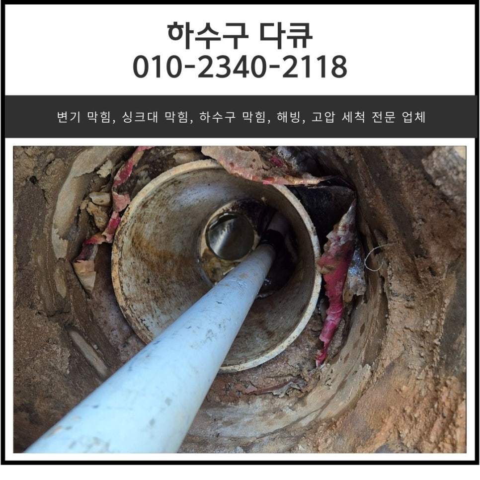
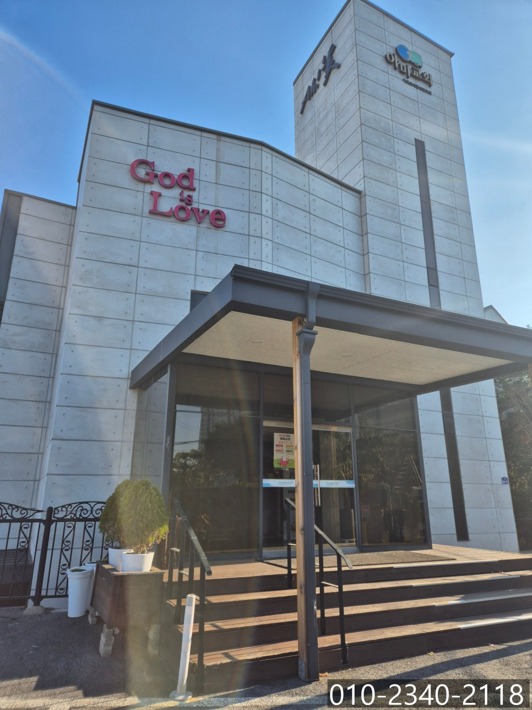
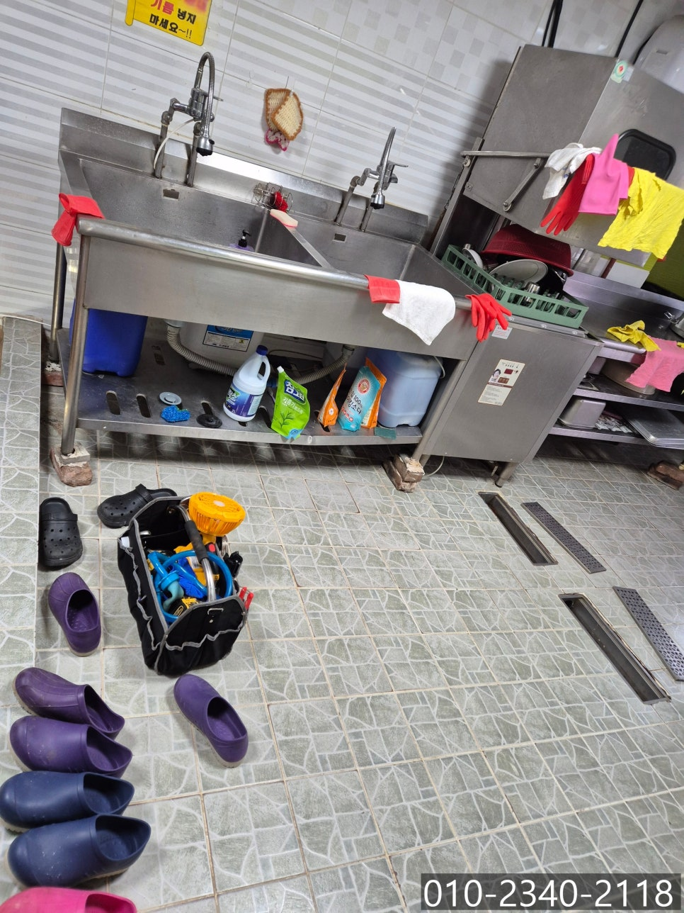
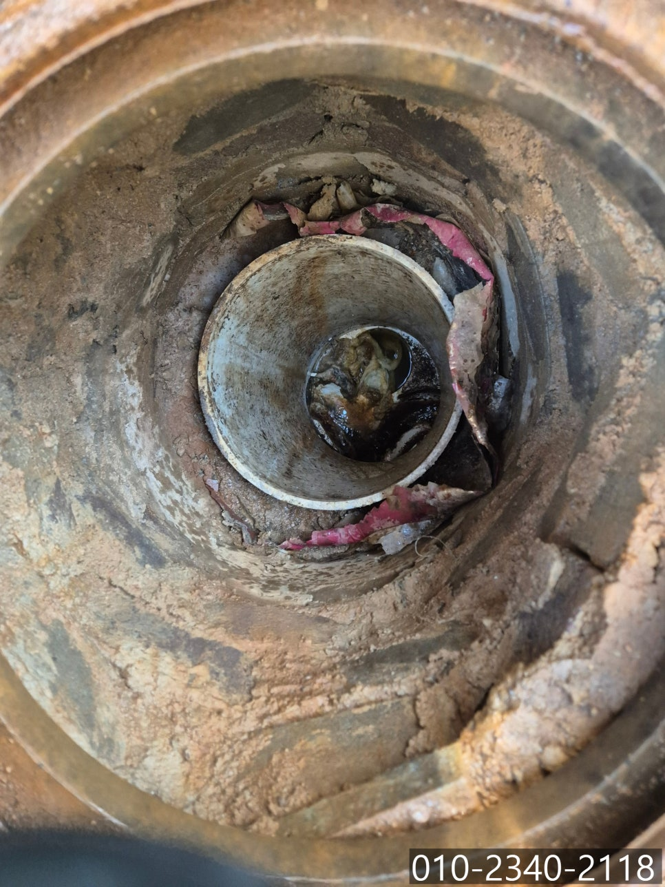
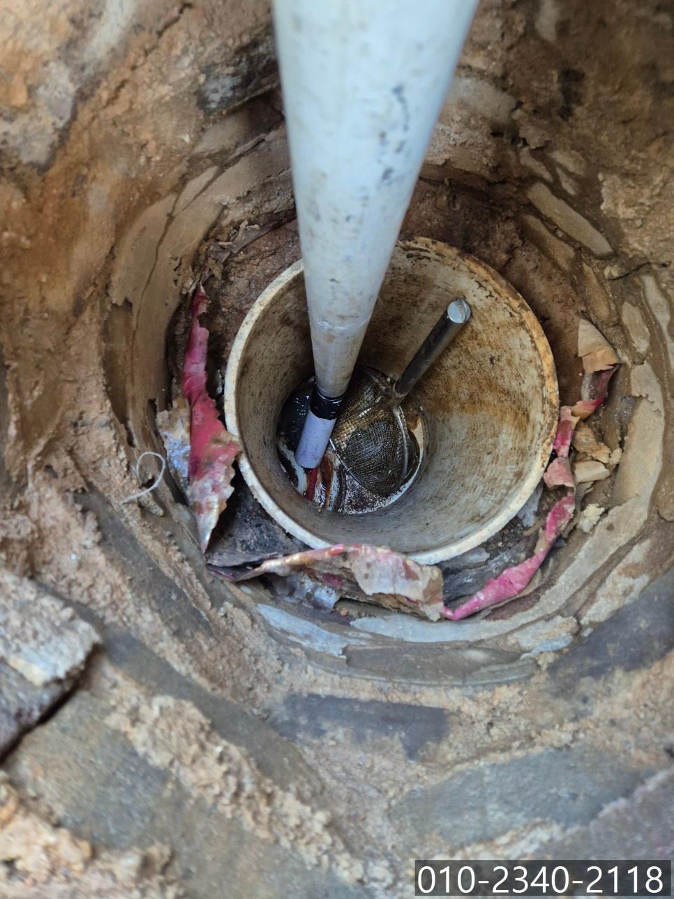
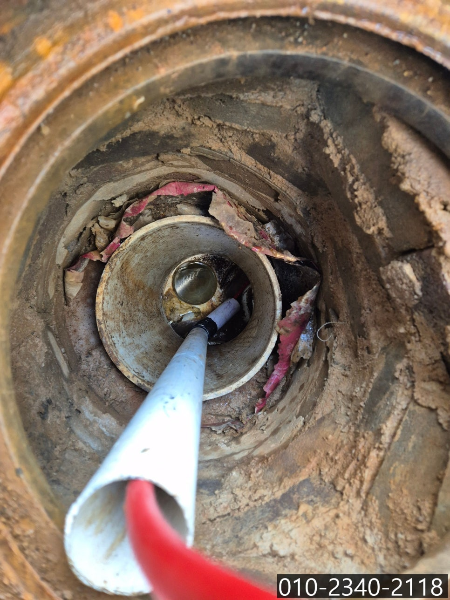
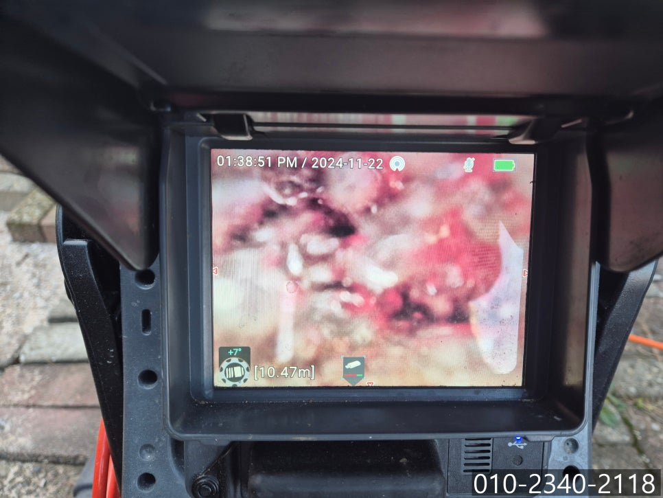

🏠 부발읍 주방 바닥 역류 이천 아미리 싱크대 막힘 해결 설비 업체
화성 싱크대막힘 전문 시공 후기

📋 작업 개요
- 위치: 화성
- 서비스 유형: 싱크대막힘, 하수구막힘, 배관막힘, 맨홀막힘, 역류해결, 뚫는업체, 배관청소
- 작업 일시: 2024. 11. 27. 9:00
- 업체명: 하수구수사대 (010-5615-2118)
🔍 문제 상황
안녕하세요.
부발읍 주방 바닥 역류, 이천 아미리 싱크대 막힘 해결 설비 업체 하수구 다큐입니다.
가정이나 식당에서 사용하는 주방에서 하수구 배관이 막히는 경우는 크게 두 가지 경우로 나뉘는데요.
바로 싱크대 막힘과 주방 바닥 막 힘입니다.
오늘은 이천 아미리에 위치한 교회에서 주방의 싱크대 막힘과 주방 바닥에서 역류하는 현상이 동시에 발생해 다녀온 현장을 소개해 드릴게요.
이천 부발읍 아미리에 위치한 교회에서 주방 하수구에 문제가 생긴 것 같다며 연락을 주셨습니다.
교회에 무슨 주방이 있지? 하고 생각하시는 분들이 많으실 텐데요.
규모가 큰 교회의 경우 주일에 성도들의 식사를 제공하는 경우가 있다 보니 주방시설이 갖춰져 있습니다.

🔎 원인 분석
💡 전문가 진단: 정밀 진단 장비를 사용하여 슬러지의 고착 여부를 판명하고 타격/세척 작업을 실시했습니다.
부발읍 주방 바닥 역류 해결을 위해 장비를 챙겨 신속하게 현장에 방문해 드렸어요.
많은 사람들의 식사를 관리하는 식당치고 깔끔하게 정리되어 있었고, 싱크대 위쪽으로 기름을 버리지 말라는 경고문도 붙어 있는 걸로 보아 꼼꼼하게 주방을 관리하고 계시는 게 느껴졌습니다.
주방을 아무리 깨끗하게 관리해도 배관 내부는 전문적인 장비 없이 청소를 할 수 없다 보니 관리하기 쉽지 않으셨을 거예요.
아무래도 싱크대와 주방 바닥이 한 번에 문제가 발생한 것으로 보아 건물에서 공동으로 사용하고 있는 배관에 문제가 발생해 동시다발적으로 막힘과 역류가 발생한 것 같았어요.
정확한 원인을 파악하기 위해 싱크대와 주방 바닥 트랜치 배관으로 내시경 카메라를 넣어 점검한 뒤 외부로 나가 반대쪽에서 배관을 살펴보기로 했습니다.
맨홀의 뚜껑을 열고 장비를 진입시켜야 하는데요.
배관이 깊은 곳에 위치하고 있다 보니 항상 구비하고 고다니는 파이프를 이용해 장비가 진입할 길을 만들어주고, 내시경 카메라를 진입시켜 점검을 시작했어요.
맨홀 뚜껑을 열어보니 낙엽이나 흙 등 이물질이 들어가 있는 것으로 보아 주방에서 사용한 이물질뿐 아니라 외부에서 유입된 이물질도 부발읍 주방 바닥 역류의 원인일 것으로 예상됩니다.

🔧 작업 과정
내시경 카메라를 진입시켜 촬영한 배관 내부의 모습이에요.
주방에서 흘려보낸 음식물 찌꺼기, 기름 성분 등이 뭉쳐져 기름 슬러지 덩어리가 생성되어 있는 상태였고, 외부에서 유입된 이물질도 뒤엉켜 배관을 막고 있는 상태였습니다.
아무래도 많은 사람들에게 음식을 만들어 제공하다 보니 일반 가정집보다 기름 사용량이 많을 수밖에 없고, 음식물 찌꺼기도 많이 흘러들어갈 수밖에 없다 보니 대형 식당의 경우 이천 아미리 싱크대 막힘이 자주 발생할 수밖에 없어요.
이천 아미리 싱크대 막힘 해결 설비 업체 하수구 다큐는 배관의 구조와 물의 흐름을 방해하고 있는 근본적인 원인을 파악한 뒤, 고객님께 내용을 설명해 드리고 배관 청소를 진행하기로 했습니다.
오늘 사용하게 될 장비는 플렉스 샤프트에요.
플렉스 샤프트는 배관 내벽을 막고 있는 이물질을 제거하는데 탁월한 장비로, 배관에 손상 없이 이물질을 타격해 제거하는 역할을 합니다.
딱딱하게 굳어있던 기름 슬러지도 플렉스 샤프트 장비를 사용하자 잘게 부서져 물과 함께 흘러내려갔어요.
사람 눈으로 직접 확인할 수 없는 배관 내부를 카메라를 이용해 꼼꼼하게 확인하며 이물질을 하나하나 제거하는 작업을 진행해 드렸습니다.
시간 가는 줄 모르고 반복해서 작업을 진행하자 이물질이 모두 제거되고 깨끗해진 배관을 확인할 수 있었습니다.
정신없이 일하다 보니 사진을 남기지 못해 너무 아쉽지만 고객님께는 깨끗이 청소된 배관의 내부 모습을 보여드렸어요.
마지막으로 이천 아미리 싱크대 막힘 해결 설비 업체 하수구 다큐는 많은 양의 물을 한꺼번에 흘려보내며 역류나 막힘 등 문제는 없는지 점검해 드리고 작업을 마무리할 수 있었습니다.
주방 하수구 막힘은 다양한 이유로 발생하는데요.


✅ 작업 완료
문제를 해결하기 위해서는 정확한 원인을 찾아 원인에 맞는 장비를 사용해야 합니다.
지금 하수구 막힘으로 고민하고 계신다면, 더 이상 스트레스받지 마시고 연락 주세요.
확실하게 뚫어드리겠습니다.
경기도 화성시 노작로 147 601-B234호




⚠️ 주방 싱크대 배관 막힘 예방 수칙
- ✅ 기름기가 묻은 식기나 프라이팬은 설거지 전 키친타올로 반드시 기름때를 닦아내세요.
- ✅ 주기적으로 싱크대 개수대에 뜨거운 물을 가득 받아 한 번에 내려 배관 내부 기름을 씻어내세요.
- ✅ 배수구 거름망을 미세한 필터로 사용하시고 음식물 찌꺼기가 틈으로 새어 들지 않게 관리하세요.
- ✅ 베이킹소다와 식초를 뜨거운 물과 함께 일주일에 한 번씩 부어주면 배관 살균과 막힘 예방에 좋습니다.
💡 핵심 정리
- 확실한 장비 작업(내시경 점검 및 샤프트 스케일링)으로 원인을 뿌리 뽑습니다.
- 작업 후 1년 이내에 동일한 부위 재발 시 100% 무상 A/S 서비스를 보장합니다.
- 서울 · 경기 · 인천 전 지역에 24시간 언제든 긴급 출동할 수 있도록 항시 대기 중입니다.
❓ 자주 묻는 질문 (FAQ)
🚨 화성 싱크대막힘 문제로 고민이신가요?
정확한 원인 진단과 확실한 시공으로 재발 없는 해결을 약속드립니다.
24시간 긴급 출동 | 서울 · 경기 · 인천 전지역 | 1년 내 재발 시 무상 A/S